Next: 3.4.4 Some comments
Up: 3.4 Variational approach to
Previous: 3.4.2 First variation
Contents
Index
3.4.3 Second variation
To better understand the behavior of  as a function of
as a function of  along the
optimal trajectory, let us
bring in the second variation.
To do this, we must first augment the description (3.25) of the perturbed state trajectory with the second-order term in
along the
optimal trajectory, let us
bring in the second variation.
To do this, we must first augment the description (3.25) of the perturbed state trajectory with the second-order term in  , writing
, writing
 We then need to go back to the
expressions (3.32)-(3.34) and expand them by adding
second-order terms in
. With
We then need to go back to the
expressions (3.32)-(3.34) and expand them by adding
second-order terms in
. With  already set equal to
already set equal to  as defined above,
it is relatively straightforward to check that the
as defined above,
it is relatively straightforward to check that the
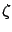
-dependent terms drop out--exactly in the same way as the  -dependent terms dropped out of the first variation (3.35)--and that the second variation is given by
-dependent terms dropped out of the first variation (3.35)--and that the second variation is given by
where we recall that
is obtained as the state of the system (3.27) driven
by  with the initial condition
with the initial condition
 .
.
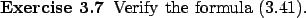
We know from
the second-order necessary condition for optimality (see
Section 1.3.3) that we must have
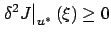
for all
.
Let us concentrate
on the integrand in (3.41) and ask the following question:
does one term in the Hessian matrix of
dominate the other terms? If
yes, then this term should be nonpositive to ensure the correct sign of
 .
We encountered a very similar issue in Section 2.6.1 in relation to the
inequality (2.61). We found there that for the overall
integral to be nonnegative, the function multiplying
.
We encountered a very similar issue in Section 2.6.1 in relation to the
inequality (2.61). We found there that for the overall
integral to be nonnegative, the function multiplying
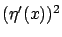
must be nonnegative, because  may be large while
itself is small. The present situation is a bit different since
is not
just the derivative of
, i.e., the system relating the two is not
a simple integrator. However, the corresponding conclusion is still valid:
may be large while
itself is small. The present situation is a bit different since
is not
just the derivative of
, i.e., the system relating the two is not
a simple integrator. However, the corresponding conclusion is still valid:
 is the dominant term because we may have a large
producing a small
(but not vice versa), as illustrated in Figure 3.5.
Thus, in order for the second variation (3.41)
to be nonnegative, we must have
is the dominant term because we may have a large
producing a small
(but not vice versa), as illustrated in Figure 3.5.
Thus, in order for the second variation (3.41)
to be nonnegative, we must have
 for all
, which can only happen if the matrix
for all
, which can only happen if the matrix
 is negative semidefinite:
is negative semidefinite:
This condition is known as the Legendre-Clebsch condition (in its Hamiltonian formulation).
Figure:
Large
can produce small
|
|
We already know from (3.39) that for each
![$ t\in[t_0,t_1]$](img949.gif) , the function
, the function
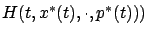
must
have a stationary point at  . Now the
Legendre-Clebsch condition (3.42) tells us that if this stationary
point is an extremum, then it is necessarily a maximum.
Even though we have not proved that the stationary point must
indeed be an extremum, it is tempting to conjecture that this
Hamiltonian maximization property is true. In other words, our
findings up to this point are very suggestive of the following
(not yet proved) necessary conditions for
optimality: If
. Now the
Legendre-Clebsch condition (3.42) tells us that if this stationary
point is an extremum, then it is necessarily a maximum.
Even though we have not proved that the stationary point must
indeed be an extremum, it is tempting to conjecture that this
Hamiltonian maximization property is true. In other words, our
findings up to this point are very suggestive of the following
(not yet proved) necessary conditions for
optimality: If
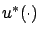
is an optimal control and
 is the corresponding optimal state trajectory, then
there exists an adjoint vector (costate)
is the corresponding optimal state trajectory, then
there exists an adjoint vector (costate)
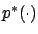
such
that:
 and
satisfy the canonical
equations (3.40) with the boundary conditions
and
satisfy the canonical
equations (3.40) with the boundary conditions
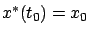
,
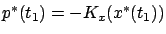
.
- For each fixed
 , the function
, the function
 has a (local) maximum
at
has a (local) maximum
at 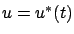
:
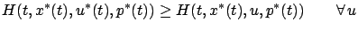
near
![$\displaystyle u^*(t),\ \forall\,t\in[t_0,t_1].
$](img956.gif)
Next: 3.4.4 Some comments
Up: 3.4 Variational approach to
Previous: 3.4.2 First variation
Contents
Index
Daniel
2010-12-20